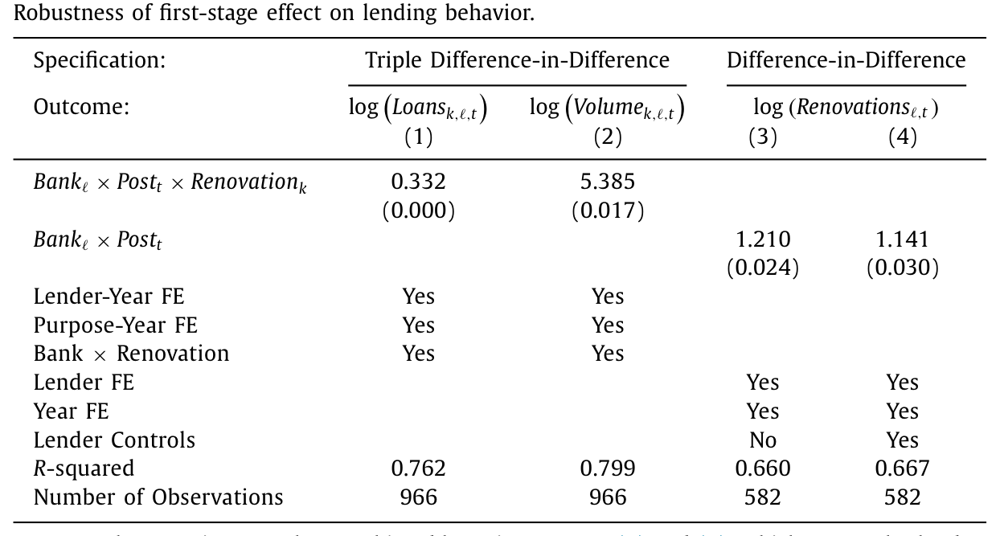
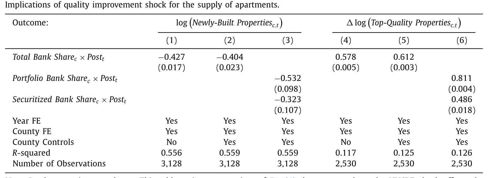
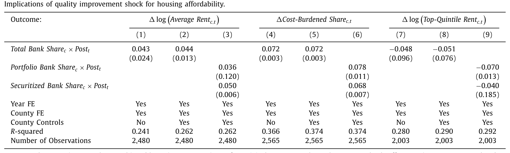
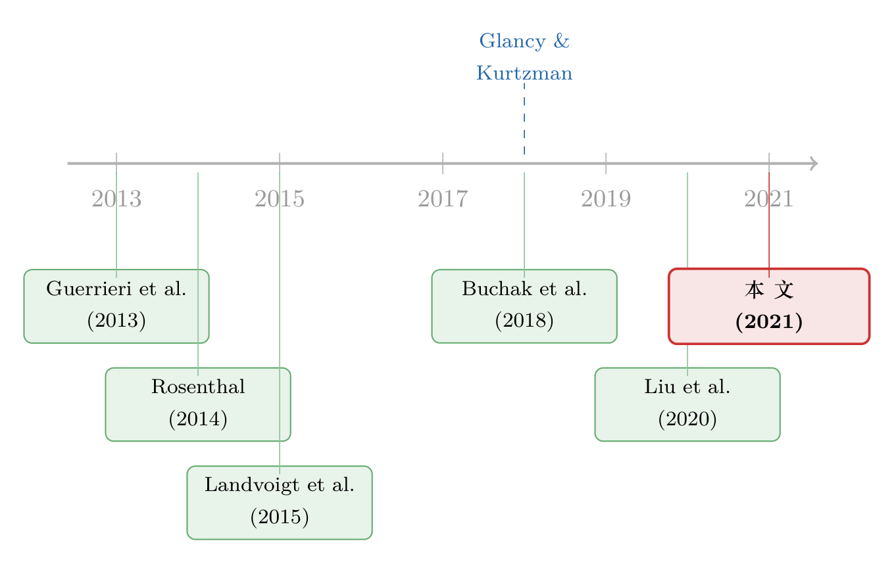

房租为什么越来越贵？答案藏在「翻新」里
本文读的是 Reher (2021, Journal of Financial Economics)：金融中介通过给房产投资者提供「翻新」融资，悄悄改变了出租房的质量结构与房租。作者利用 2015 年一次针对银行资本金的监管「误伤」（HVCRE 规则）做出外生冲击，发现银行把信贷从「新建」搬向「翻新」，这一搬，解释了 2015–16 年间 24% 的住房质量提升和 32% 的房租上涨。
1 一个被忽略的事实：房租贵，但贵在「变好」
先抛一个几乎人人都有体感、却很少被认真拆开的现象：大衰退之后，美国的房租贵得离谱。按住房空置调查的口径，2016 年有 37% 的家庭在租房，在洛杉矶、纽约这样的都会区更是高达 50%；2015 年租金收入比 (rent-to-income ratio) 的中位数摸到了 30%，是上世纪八十年代以来的最高点。
围绕「房租为什么这么贵」的讨论，几乎都落在同一条轴上：要么是需求太旺，要么是供给太少——盖的房子不够多。于是政策的药方也都开在「量」上：多盖房、管制租金、给补贴。
但这篇论文一上来就提醒你：你们都漏掉了一件事。
漏掉的，是质量。作者记录了一个此前文献里没人正式写下来的事实——自大衰退以来，出租房的「改善」（improvement，作者用它统称从大修翻新到装一台空调的所有质量提升）活动经历了一轮历史性的激增。一套房子被翻新，它从质量分布的低段被推到了高段；它原本是「便宜的」，翻新之后变成了「贵的」。
这里有个反直觉的点：翻新并不会凭空增加房子的「数量」，但它会改变房子的「质量构成」——把廉价房一套套地变成高质量房。于是即便总套数没变，廉价房的供给反而减少了，平均房租自然被抬起来。
接着，一个自然的问题是：这股翻新浪潮，钱是从哪儿来的？作者给出的两个事实把方向钉死了。第一，根据 2015 年的租赁住房金融调查 (RHFS)，70% 的翻新发生在有按揭的房子上——也就是说，翻新高度依赖外部融资。第二（如图 1 所示），翻新活动从 2008 年的低点强劲反弹，到 2014 年就已经超过了衰退前的高点；与此同时，房租增长在不同质量段上呈现出鲜明的分化：在 2011–17 年间，按租户实际收入分位排序，最低三个分位的实际房租每年至少涨 2.9%，而最高分位只涨了 0.9%。
质量在涨，高质量段的房租反而最克制——这正是「高质量房供给外移」该有的样子。把这两件事放在一起，故事的轮廓就出来了：金融中介在给翻新供血，而翻新在重塑房租。 剩下的全部工作，就是把这条因果链一节一节地坐实。
2 把「质量」放回供给侧
在动用数据之前，作者先把研究假设讲清楚，逻辑链条非常干净。
设想存在一个出租房质量分布，质量被定义为房屋的某种结构性特征（比如有没有空调）。房产投资者（注意：是专业投资者，不是自住业主）持有这些存量房，并执行翻新项目，把一套房从低质量段抬到高质量段。要翻新，就要外部融资。
现在来一个冲击，它让金融中介更愿意供给翻新融资。这个冲击的传导有两种形态：一是放松了受约束投资者的借贷约束，二是在信用风险不变时给不受约束的投资者更低的利率。两条渠道都指向同一个结果——翻新活动增加。
然后，翻新增加会怎样改写房租？这里是全文的「机制核心」，值得慢一点讲：
- 高质量房相对低质量房有质量溢价（更高的租金），这反映了住户为质量买单的意愿；
- 翻新抬高了平均一套房的质量，于是平均房租上升；
- 但市场必须消化掉新增的高质量房供给，这要求质量溢价被压缩——也就是说，高质量房自身的房租反而下降。
一句话：同一个冲击，把平均房租推上去，却把高端房租压下来。这个看似矛盾的组合，恰恰是「供给侧质量改善」留下的独特指纹，也是后文要在数据里验证的预测。
3 识别：一次监管的「误伤」
讲到这里，真正关键的一步出现了：怎么找到一个外生地改变翻新融资供给的冲击？如果翻新多了只是因为某地经济好、租户更有钱，那一切相关性都不能说明金融中介「导致」了什么。
作者找到的工具，是一次监管的副作用。
3.1 HVCRE：一道资本金的楔子
2015 年 1 月，美国银行监管者把某类商业地产贷款——所谓高波动商业地产 (High Volatility Commercial Real Estate, HVCRE) 贷款——的资本金风险权重从 100% 提到了 150%。HVCRE 专指为不动产「开发或建设」服务的贷款，作者简称为「新建」（construction）。而「对既有创收型不动产的改善」贷款（U.S. Code §1831bb(b)(2)(C)），也就是翻新贷款，没有被这次上调波及，仍维持在 100% 的权重。
关键在于，这套风险权重是为了对接巴塞尔 III (Basel III) 的国际标准而定的，与美国房地产市场本身的任何冷热无关——这正是它「外生」的来源。
它造成了什么？一道资本金成本的楔子。设 \(K\) 为监管最低资本充足率（比如 6%）。在 Modigliani–Miller 定理失效、银行筹集股本足够昂贵的前提下，资本金要求是有约束力的。那么对每 1 美元贷款，银行需要预留的股本为：
$$ \text{capital}_{\text{construction}} = 1.50 \times K, \qquad \text{capital}_{\text{improvement}} = 1.00 \times K $$
两者之差就是这道楔子：
$$ \Delta = (1.50 - 1.00)\times K = 0.50 \times K $$
代入 \(K = 6\%\)，意味着每放 1 美元的新建贷款，银行要比翻新贷款多压上约 3 美分的股本。要在维持对商业地产总敞口不变的同时压低监管负担，银行的最优反应就是：把可贷资金从新建搬向翻新。注意，银行大可以干脆少放新建贷款了事，但后文 Table 6 会显示，银行实际上是增加了翻新放贷，从而保住了对商业地产的总敞口——这与 Greenwood et al. (2017) 的猜想一致。
这套逻辑对组合贷款（portfolio loans，留在银行资产负债表上）最强，因为它需要长期占用股本。对证券化贷款（被打包成 CMBS），银行只在仓储期（T-Loan 数据里平均 6 个月）和风险自留比例（通常 5%）上承担资本金，激励更弱但仍存在。作者把两类贷款都纳入了核心分析。
3.2 三重差分的「第一阶段」
有了冲击，先验证银行确实「按剧本」反应了。作者在公寓贷款市场内部，比较银行（「处理组放贷者」）与专业非银行放贷者（不受资本金约束，「控制组放贷者」）对翻新项目的资金配置，用的是一套三重差分 (triple difference-in-difference) 方法。结果（如表 6 所示）显示：在 HVCRE 出台前，银行与非银行的配置走的是平行趋势；出台之后，银行把可贷资金重新分配给了翻新。这个放贷者层面的发现，正是整篇文章的「第一阶段」（first-stage），它为冲击的有效性背了书。

Table 6
3.3 县级双重差分与平行趋势
基准分析则在县这一层展开。一个县的处理强度，由它历史上对银行（相对非银行）放贷的依赖度来定义：高度依赖银行的县是「处理县」（treated counties）。逻辑很直接——既然冲击直接作用于银行，那么越依赖银行的地方，受到的传导越强。
在 HVCRE 出台前，银行依赖型与非银行依赖型的县在翻新活动上走平行趋势；出台后，前者的实际翻新活动显著更高，且在多种结果度量上稳健。横截面上，效应在投资者信贷来源更少、以及租户更愿意为质量买单（如高收入租户）的县更强——这进一步指向「冲击放松了投资者对翻新融资的需求约束」。
作者还做了一组让人安心的稳健性：换用 RCA 替代数据复制基准（Table 3）、控制 GSE 需求变化、剔除非约束借款人的翻新、排除其他多德-弗兰克条款的混淆、加一整套县特征和州×年固定效应，等等。最硬的一招是房产层面的双重差分：它依赖一个极弱、且对任何县级不可观测特征免疫的识别假设，结论是 HVCRE 把一处房产当年发生翻新的概率抬高了 46%（即 1.2 个百分点）。
4 数据
核心数据来自 Trepp LLC 的两套，覆盖 2010–16 年一个具有代表性的公寓物业面板：
- T-ALLR：银行发起、且留在资产负债表上的组合贷款。优点是覆盖了「高度机密」的组合贷款、编码了最强的监管激励；缺点是只含银行、原始数据仅覆盖
10%的美国县（按人口加权52%），且无法显式识别哪些是翻新贷款。 - T-Loan：被证券化为 CMBS 的公寓贷款，含银行与非银行发起者，按人口加权覆盖
90%的县，且有租金、面积、入住率、翻新历史等丰富的物业级变量。
两者一个深、一个广，作者把它们合并使用。辅助数据则有 Real Capital Analytics (RCA) 的公寓交易数据（2009–16，用于复制核心结果）与人口普查的美国住房调查 (American Housing Survey, AHS)——后者全国代表性强、物理特征细致，专门用于第 8 节的质量调整，但地理只到 MSA、且仅覆盖 43% 的 MSA，2015 年改版还打断了面板结构，故只能补充而不能替代核心数据。
5 主要结果：从信贷到房租的一条链
把上游的信贷冲击，一路追到下游的可负担性，是这篇文章最漂亮的地方。
上游——信贷重配。 与放贷者层面的「第一阶段」一致，HVCRE 在县级减少了公寓新建。但耐人寻味的是，尽管整体公寓供给被压低，高质量公寓的供给反而增加了——因为冲击催生的翻新，把低质量公寓变成了高质量公寓（如表 7 所示）。

Table 7
下游——房租分化。 高质量公寓供给的增加，伴随着高质量公寓房租增长的下降；与此同时，冲击显著抬高了平均一套公寓的房租，这反映了「平均质量上升」与「整体供给减少」两股力量的合力（如表 8 所示）。这恰好印证了第 2 节那个看似矛盾的预测——平均房租上去，高端房租下来。

Table 8
冲击还推高了租金收入比超过政策口径「负担过重」（cost-burdened）门槛的家庭占比。这一福利含义是暧昧的：房租更高，但住的也是更好的房子；在分配意义上，由于住房质量是正常品，受益的更可能是高收入家庭。
总量——这事到底有多大？ 用应用宏观文献里的加总方法（如 Chodorow-Reich, 2014），作者算出在局部均衡下，HVCRE 冲击解释了 2015–16 年间 24% 的质量提升与 32% 的房租增长。32% 听起来大得吓人，作者于是用 AHS 做了一次对冲性的质量调整（这一调整不对「冲击来自哪里」表态，只问「房租涨幅里有多少来自质量提升」）：结果是，任何来源的翻新，合计解释了大衰退后实际房租涨幅的 70%。既然质量改善整体就能解释七成，那么单一的 HVCRE 冲击解释三成，量级上完全站得住。
6 文献脉络
这篇论文坐在好几条线的交叉口上，但它的真正贡献，是把「质量」这条线接进了「金融中介」这条线。

第一条线是住房过滤 (filtering)。Rosenthal (2014) 研究私人市场与「向下过滤」能否成为低收入住房的来源；Liu et al. (2020) 进一步记录了过滤率在地理与时间上的差异。本文指出，翻新本身就是一种「向上过滤」，因而能帮助解释这种横截面变异——只是它把过滤的驱动力追溯到了融资。
第二条线是绅士化 (gentrification) 与质量分段的均衡模型，如 Guerrieri et al. (2013) 对城市变迁的刻画，以及 Landvoigt et al. (2015) 对不同质量段住房需求的研究。本文的建议很明确：把金融摩擦写进这些均衡模型——金融中介，正是城市变迁中一个被忽视的关键供给方。
第三条线是资本监管与影子银行。Buchak et al. (2018) 等揭示了资本要求如何把信贷推向非银行；而与本文最贴近的 Glancy and Kurtzman (2018)，正是研究 HVCRE 对利率的影响。本文与之分工清晰：它们看价格（利率）、把处理期定义为监管「公告」后（post-2013）；本文看数量（翻新活动）、把处理期定义为监管「落地」后（post-2015），因为放贷者一度对规则细节相当困惑，事前并未调整。
于是，本文落在了这样一个位置：它既是少数研究金融市场如何影响租赁（而非自有）住房的论文之一，也是「多德-弗兰克非预期后果」这条文献里，第一篇把上游银行监管与下游住房质量直接连起来的工作。
关于「银行资本监管会把信贷推向哪里」这个母题，本博客另有几篇可参照阅读：跨境视角下监管者如何争夺同一块股本，见《加一道资本要求，钱是流进来还是流出去？》；银行信贷供给如何沿着资产负债表外溢到房价，见《华尔街亏的钱，怎样变成了瑞士小镇上涨的房价》；而房租与房价在时间上的「滞后传导」，可参见《把十年前的房价，刻进今天的房租里》。
7 评论与延伸（Q&A + 研究方向）
(a) 几个可能的疑问
Q：翻新让房子变好、平均房租上涨，这到底是好事还是坏事？
作者自己也承认福利含义不清。平均房租涨了，但住户拿到的是更高质量的房子，这部分是「一分价钱一分货」。真正值得警惕的是分配后果：高质量房供给增加、低质量（廉价）房供给减少，而住房质量是正常品，受益更可能落在高收入家庭，廉价房租户则被挤压。论文给的是「机制」，不是「应该不应该」的规范判断。
Q：用「县历史上对银行的依赖度」做处理强度，会不会本身就和房租前景相关？
这是最该担心的内生性。作者的两道防线是：其一，处理前银行依赖型与非银行依赖型的县走平行趋势，冲击后才劈叉；其二，也是更硬的一招，房产层面的双重差分只要求一个对县级不可观测特征免疫的弱假设，仍得到翻新概率上升
46%的结论。两者方向一致，才让人相信不是「好地方既依赖银行又恰好要涨租」。
Q：HVCRE 的冲击只有「翻新 vs 新建」这一道楔子吗？会不会混进了多德-弗兰克的其他条款？
作者专门做了稳健性，检验结果是否被其他具体的多德-弗兰克监管所混淆，并控制了一整套县特征与州×年固定效应。HVCRE 的好处恰在于它只在「新建 100%→150%」与「翻新维持 100%」之间制造了相对价格差，而这套权重是为对接巴塞尔 III 而定、与美国地产周期无关。
Q：证券化贷款也算进来了，会不会稀释了识别？
证券化贷款的监管激励确实更弱——银行只在平均 6 个月的仓储期、以及通常
5%的风险自留比例上承担资本金，且 GSE 购买的部分还豁免风险自留。但「更弱」不等于「没有」，T-Loan 仍编码了激励。作者把它纳入，是为了换取更广的地理覆盖（人口加权90%的县）与更丰富的物业级变量，并以 T-ALLR 的纯银行组合贷款来锚定最强激励。
Q：32% 的房租增长由单一监管冲击解释，是不是太大了？
直觉上确实大。作者的回应是做一次不依赖「冲击来源」的质量调整：结果显示任何来源的翻新，合计解释了大衰退后实际房租涨幅的
70%。既然质量改善整体能解释七成，那么某一个具体冲击解释三成，量级上是可信的。
Q：这和标准的「供需」渠道（多盖房压房租）是一回事吗？
不是。标准渠道走的是数量（如 Asquith et al., 2019：新增供给压低当地房租）；本文走的是质量——通过把廉价房翻新成高质量房，在不增加总量的情况下重塑质量构成。两条渠道并行不悖，但本文强调的是后者这条「被漏掉的」路径。
(b) 几个可能的研究问题与提案
1. 把这套「质量供给」逻辑搬到公司债/信用市场。
【经济故事】本文的内核是：资本金的相对权重，决定了银行把信贷搬向哪一类项目。在公司信用市场，监管对不同评级、不同担保结构债权的资本/风险权重同样存在楔子——它会不会让银行把信贷从「高风险新建型」企业搬向「低风险维持型」企业，从而改变实体的「质量构成」（如固定资产更新 vs 扩张）？ 【可行性】中。需要银行贷款层面数据（如 Y-14、DealScan）配监管权重变化，识别可借鉴本文的「处理 = 受权重上调的贷款类型」。难点在于找到一次像 HVCRE 这样干净、与基本面无关的相对权重变动。
2. 外资持有人是否系统性偏好「翻新」而非「新建」？
【经济故事】本文的借款人是专业地产投资者。不同来源的资本（本土银行 vs 外资机构）对翻新与新建的风险偏好、持有期限可能不同——外资若更偏好现金流稳定的创收型物业，则其进入会进一步放大「向上过滤」。 【可行性】中。可用 RCA 交易数据识别买方国籍 × 翻新历史，叠加资本流动冲击（如汇率或母国监管变化）做识别。诚实地说，外资身份的内生性（外资挑好物业）是主要威胁，需要一个外生的资本流动工具。
3. 翻新融资的「流动性」维度：它如何改变了出租房作为抵押品的可质押性？
【经济故事】一套房翻新后质量上升、估值上升，作为抵押品的可质押性也随之变化。这会反过来影响投资者的再融资能力，形成「翻新→估值→再融资→再翻新」的放大回路。 【可行性】中高。Trepp/CMBS 数据里有翻新历史、贷款条款与再融资记录，可在房产层面追踪。识别可沿用本文的 HVCRE 冲击作为第一阶段，把再融资作为下游结果。
4. HVCRE 的总量福利账：质量上升与廉价房挤出，净效应为正还是为负？
【经济故事】本文坦言福利含义暧昧。一个自然的延伸是建一个带质量分段与金融摩擦的均衡模型，把「质量提升的消费者剩余」与「廉价房供给收缩的分配损失」放在同一天平上称量。 【可行性】低到中。需要结构估计需求侧（不同收入段对质量的支付意愿）与供给侧（翻新技术与融资成本），数据可用 AHS + Trepp，但对模型设定与外部有效性的要求很高。
我的判断
这篇文章最大的贡献，是把一个被政策讨论彻底忽略的变量——住房质量——重新放回了可负担性的方程，并且用一条干净的「上游监管→银行信贷→翻新→房租分化」的因果链把它讲透了。HVCRE 是一次难得的、与地产周期正交的相对价格冲击，作者从放贷者、县、房产三个层面层层夹逼，识别的可信度在房地产金融的实证里属于上乘。「平均房租升、高端房租降」这个反直觉却被数据印证的预测，尤其漂亮。
我的两点保留：其一，处理强度建立在「县对银行的历史依赖度」上，虽有平行趋势和房产级 DiD 兜底，但「依赖银行的地方」与「翻新有利可图的地方」之间是否还残留某种长期相关，仍值得更多安慰性证据；其二，24%、32% 这类局部均衡的加总数，对加总方法和外推假设相当敏感，作者用 70% 的质量调整做了合理性背书，但一般均衡下这些数字会被反馈效应放大还是衰减，文章没有正面回答。
我接下来最想看到的，是把这套「金融中介作为住房质量供给者」的逻辑，接到信用市场的抵押品与再融资上去——当一套房因翻新而升值、可质押性上升，它会不会喂出下一轮翻新？这条放大回路，可能才是「金融如何重塑城市」更深的那一层。
8 参考文献
- Asquith, B. J., Mast, E., & Reed, D. (2019). Supply Shock Versus Demand Shock: The Local Effects of New Housing in Low-Income Areas. Working Paper 19-316, Upjohn Institute.
- Buchak, G., Matvos, G., Piskorski, T., & Seru, A. (2018). Fintech, regulatory arbitrage, and the rise of shadow banks. Journal of Financial Economics.
- Guerrieri, V., Hartley, D., & Hurst, E. (2013). Endogenous gentrification and housing price dynamics. Journal of Public Economics.
- Landvoigt, T., Piazzesi, M., & Schneider, M. (2015). The housing market(s) of San Diego. American Economic Review 105(4), 1371–1407.
- Liu, L., McManus, D. A., & Yannopoulos, E. (2020). Geographic and Temporal Variation in Housing Filtering Rates. Working Paper, Freddie Mac.
- Reher, M. (2021). Finance and the supply of housing quality. Journal of Financial Economics 142(1), 357–376.
- Rosenthal, S. S. (2014). Are private markets and filtering a viable source of low-income housing? Estimates from a "repeat income" model. American Economic Review 104(2), 687–706.